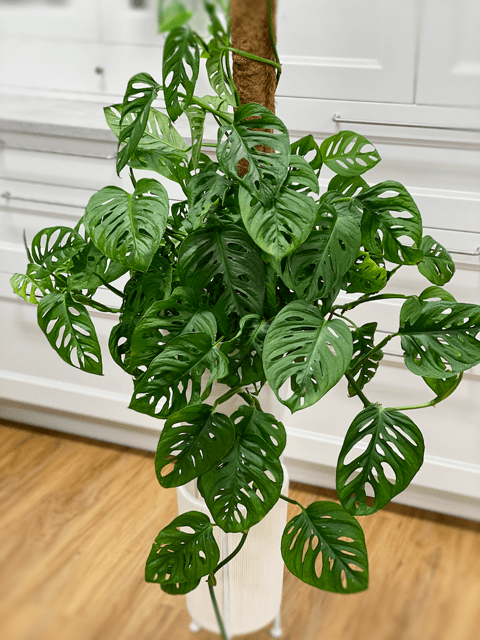
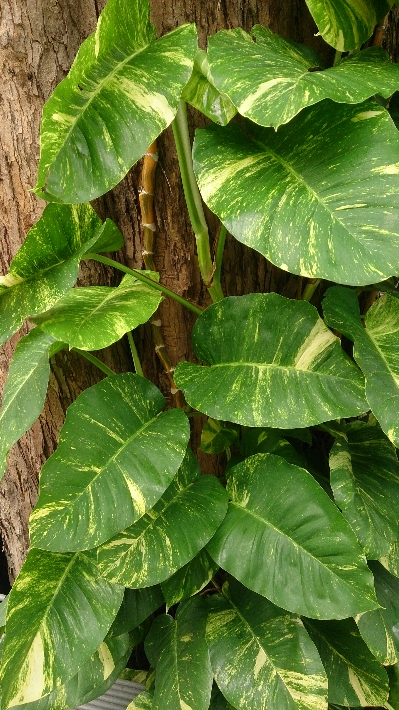

Plant Care Tips

Swiss Cheese
The Swiss Cheese plant, also known as Monstera deliciosa, is a stunning tropical plant known for its distinctive holey leaves. Perfect for adding a touch of the jungle to your dorm room!
Care Instructions:
- Light: Bright, indirect light - avoid direct sunlight
- Water: Water when the top inch of soil is dry
- Humidity: Enjoys higher humidity - mist occasionally
- Temperature: 65-85°F (18-29°C)
- Fertilizer: Feed monthly during growing season

Pothos
Pothos is one of the most forgiving plants you can own! With its beautiful trailing vines and heart-shaped leaves, it's perfect for hanging baskets or letting it climb up a moss pole.
Care Instructions:
- Light: Tolerates low light, but prefers bright indirect light
- Water: Water weekly, allow soil to dry between waterings
- Humidity: Average room humidity is fine
- Temperature: 60-85°F (15-29°C)
- Fertilizer: Feed every 2-3 months

Bamboo
Lucky bamboo brings good fortune and positive energy to any space! This versatile plant can grow in water or soil and is incredibly low-maintenance, making it perfect for busy students.
Care Instructions:
- Light: Indirect sunlight, avoid direct sun
- Water: Keep roots moist in water or well-draining soil
- Humidity: Enjoys higher humidity
- Temperature: 65-90°F (18-32°C)
- Fertilizer: Feed monthly with diluted fertilizer